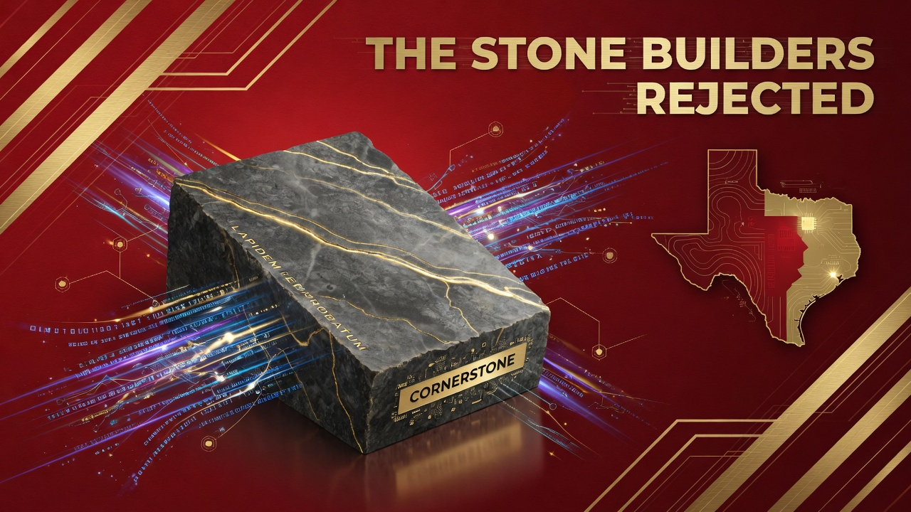
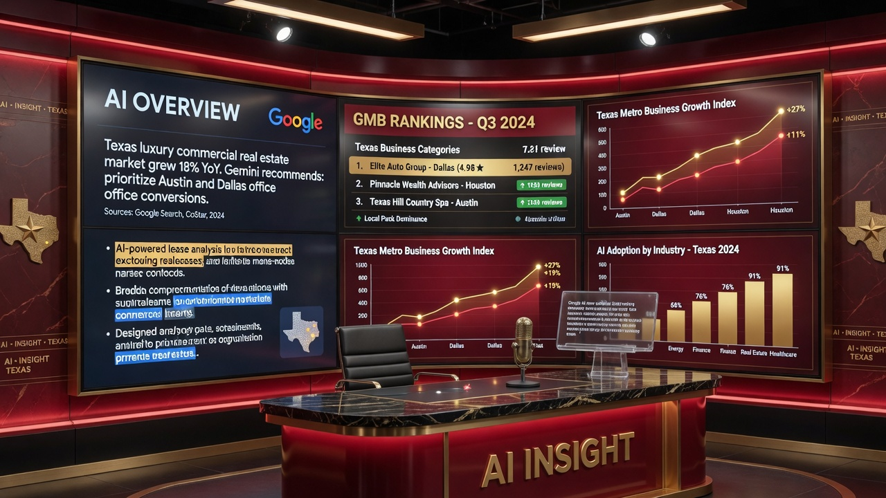
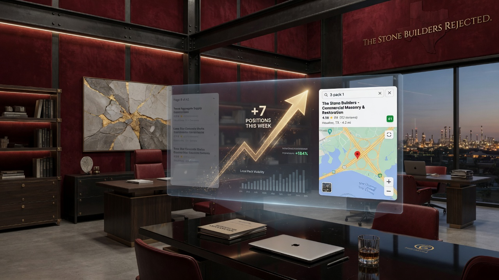

Turn overlooked companies into market cornerstones.
Michael Kaswatuka and The Stone Builders Rejected help serious Texas B2B businesses rank in Google Maps, win organic local search, and get cited in AI Overviews — so commercial buyers find you first, not your competitors.
The Stone Builders Rejected (TSBR) is a Texas B2B local SEO agency in Arlington that optimizes Google Business Profiles, builds citation and content silos, and engineers AI Overview visibility so commercial buyers find your company first across DFW, Houston, Austin, San Antonio, and statewide.
Local search systems built for Texas B2B
Every strategy is engineered around how commercial buyers actually search in Texas — not generic national playbooks. GMB is the foundation; AI visibility is the future; leads are the outcome.
Google Business Profile Optimization
Complete GMB engineering — 50+ photos, weekly posts, review velocity, category optimization, and Map Pack signals that move you into the top 3 across DFW, Houston, Austin, and beyond.
Full GMB service →AI Overview & Generative Search
Entity strength, structured content, FAQ schema, and authority signals so Google AI Overviews and generative search cite your business as the trusted Texas answer.
AI search service →Local SEO for Texas
70+ citations, NAP consistency, location pages, content silos, and technical SEO tailored to every Texas metro you serve.
Local SEO service →B2B Lead Generation Systems
Search-driven lead systems that deliver qualified commercial inquiries — industrial buyers, project managers, and procurement teams, not vanity traffic.
B2B leads service →Built for the companies big agencies ignore
The name comes from Psalm 118:22 — the stone the builders rejected became the cornerstone. We turn overlooked Texas B2B companies into the dominant, trusted choice in their markets.
Direct access to Mike Kaswatuka. Map Pack positions, AI citations, and qualified leads — not vanity metrics.
Our story
A clear path from invisible to dominant
Our five-phase framework has delivered consistent Map Pack and AI Overview results for industrial suppliers, contractors, manufacturers, and professional services firms across Texas.
Audit
Every engagement begins with a forensic audit of your Google Business Profile, citations, website local signals, competitor Map Pack positions, and AI Overview visibility. We document suppression risks, NAP inconsistencies, category gaps, and quick wins versus structural fixes. You receive a written report with a prioritized 90-day roadmap before any implementation begins. This is the same audit we offer prospects for free because strategy without diagnosis is guesswork.
Strategy
Mike Kaswatuka builds a market-specific plan based on how your buyers search in each Texas metro you serve. We map commercial keyword intent, estimate competitive difficulty, align GMB categories and services, and define success metrics: Map Pack rankings, review velocity, qualified lead volume, and AI citation targets. Multi-location clients receive a branch-by-branch rollout sequence that prevents listing conflict and cannibalization.
Foundation Build
We fix the structural layer first: profile completeness, photo and video deployment, service and product entries, citation cleanup, on-page location optimization, and schema markup. Texas B2B buyers trust what they see. Facility tours, fleet imagery, certifications, and project proof published across GMB and your website establish the entity strength that both Google Maps and AI models reward.
Launch
The GMB Velocity System goes live: weekly Google Posts, Q&A seeding, review acceleration workflows, and competitor monitoring. Content aligns with seasonal demand and regional terminology. DFW industrial buyers, Houston energy corridor procurement teams, and Austin tech vendors search differently. Launch creative and keyword targeting reflect those differences rather than applying a generic national playbook.
Grow and Defend
Local search is not set-and-forget. Competitors react, algorithms shift, and AI Overviews expand into new query types. Ongoing management strengthens your signals, expands into adjacent service areas, reports ranking and lead attribution monthly, and defends Map Pack positions you earned. Clients who stay through the compounding phase see the largest ROI because authority accumulates across reviews, citations, content, and entity corroboration.
Why Texas B2B companies choose TSBR
Texas-only B2B focus
We do not chase restaurants, salons, or national e-commerce brands. Every process, case study, and keyword framework is built for Texas commercial buyers with high deal values and long sales cycles. That specialization means faster diagnosis and strategies that speak the language of plant managers, estimators, and procurement officers.
GMB as the revenue engine
Google Business Profile is the highest-ROI asset for most Texas B2B companies because buyers start on Maps. We treat GMB as an engineering project, not a checklist. Photos, posts, reviews, categories, and Q&A work together as a system that moves profiles from suppressed or invisible to top-3 Map Pack dominance.
AI Overview engineering
Generative search is already shaping B2B vendor discovery. We build entity authority, structured answer content, and corroborating citations so AI models recommend your business by name. Clients appear in Google AI Overviews and other AI-powered answers while competitors still debate whether AI SEO is real.
Real outcomes for Texas B2B companies
From page 9 to 17 Map Pack positions in 74 days
"We had been invisible despite having the best equipment and service in North Texas. TSBR completely transformed our visibility."
— Director of Operations, Precision Machine Works, Irving4.3x lead volume after dominating Maps and AI Overviews
"The combination of GMB work plus AI optimization put us in conversations we were never part of before."
— Owner, Gulf Coast Commercial ConstructionWhere we deliver results
Headquartered in Arlington. Serving every major Texas metro.
Arlington / DFW
Arlington is home base for The Stone Builders Rejected. From our office on Brynmawr Court we serve the full DFW Metrople...
View market →Dallas
Dallas anchors North Texas commerce. B2B companies compete for visibility from Uptown corporate headquarters to industri...
View market →Fort Worth
Fort Worth blends industrial heritage with rapid west DFW growth. Manufacturing, fabrication, logistics, and trade contr...
View market →Houston
Greater Houston is Texas largest B2B market. Energy corridor firms, commercial contractors, industrial suppliers, and po...
View market →Austin
Austin combines tech-sector procurement with booming commercial construction and civil infrastructure growth. B2B firms ...
View market →San Antonio
San Antonio and South Texas industrial corridors rely on local discoverability for manufacturing supply, defense contrac...
View market →What Texas business owners say
"We went from page 9 to owning 17 Map Pack positions in 74 days. Our sales team is now overwhelmed with high-quality commercial leads."— Director of Operations, Precision Machine Works, Irving, TX
"The GMB work plus AI optimization put us in conversations we were never part of before. We are now the default recommendation in greater Houston."— Owner, Gulf Coast Commercial Construction, Houston, TX
"TSBR understood our civil engineering practice better than any agency we interviewed. Austin metro visibility changed our bid pipeline within one quarter."— James K., Managing Partner, Lone Star Civil Engineering, Austin, TX
Latest from the blog
Proprietary GMB Velocity System for Texas B2B
How TSBR Velocity System delivers top 3-pack rankings and AI visibility for Texas B2B companies.
Read article →How to Rank Your Google Business Profile in Texas
Complete playbook for Map Pack dominance across DFW, Houston, Austin, and San Antonio.
Read article →Optimizing for AI Overviews: Texas B2B Guide
Practical steps to get cited when Texas buyers ask AI for local vendor recommendations.
Read article →Why Texas B2B companies trust TSBR
See the GMB Velocity System at work
Texas B2B search dominance in practice




Common questions
How long until we see Google Map Pack movement?
Do you optimize for Google AI Overviews and generative search?
What industries do you specialize in for Texas B2B?
Do you work outside Arlington and DFW?
How do you price local SEO and GMB services?
Can you manage multiple Google Business Profile locations?
What Texas metros are most competitive for Map Pack rankings?
Do you help with website redesign or only SEO?
How do AI Overviews change traditional local SEO?
Can you help us get more Google reviews without violating policies?
Your free audit includes everything.
Every audit request gets a personal review of your local search landscape across Texas.
- ✓Complete Google Business Profile health scan
- ✓Listing suppression and duplicate detection
- ✓Primary category and service alignment review
- ✓Map Pack ranking snapshot for top 20 keywords
- ✓Organic local ranking baseline
- ✓Top five competitor profile teardown
- ✓Citation and NAP consistency analysis (50+ sources)
- ✓Review profile velocity and sentiment assessment
- ✓Photo and post activity benchmark vs competitors
- ✓Website on-page local SEO evaluation
- ✓Schema markup and structured data check
- ✓AI Overview and generative search visibility audit
- ✓Multi-location conflict identification (if applicable)
- ✓Lead attribution and tracking gap analysis
- ✓Written 90-day prioritized action plan
Request your free audit
Custom estimate within 24 hours on weekdays.
Go to contact formOr call (682) 206-4178
Ready to become the cornerstone of your market?
Request a free audit of your Google Business Profile, local visibility, and AI Overview potential.
Request Free Audit